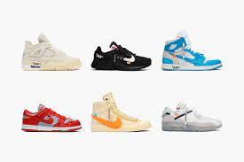
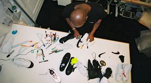

There’s one name almost as synonymous with Nike and the Jordan Brand as Michael Jordan himself — Virgil Abloh. A Chicago native, Abloh is the American dream personified. The son of Ghanaian immigrants, Abloh earned degrees in civil engineering and architecture and worked his way up through the fashion world ranks. He began with designing T-shirts at a Chicago print shop. He later partnered with Kanye West, became an artistic director at Louis Vuitton, and started his own label, Off-White. His style effortlessly marries high fashion with streetwear.



From Air Max to Nike Dunks, Abloh put his spin on the most iconic Nike sneaker designs. Abloh has always been a Nike sneaker fan, describing himself as “...a kid who would sleep with a Jordan 5 at the end of the bed just so I could see it in the morning.” He even started designing Nike sneakers back then. He once told media collective Complex, “My friend Chris Eaton and I used to be so obsessed with Jordan that we were drawing Nike shoes and sending them to Nike. And, Nike would be like, ‘Oh, we don’t accept designs.”
From Air Max to Nike Dunks, Abloh put his spin on the most iconic Nike sneaker designs. Abloh has always been a Nike sneaker fan, describing himself as “...a kid who would sleep with a Jordan 5 at the end of the bed just so I could see it in the morning.” He even started designing Nike sneakers back then. He once told media collective Complex, “My friend Chris Eaton and I used to be so obsessed with Jordan that we were drawing Nike shoes and sending them to Nike. And, Nike would be like, ‘Oh, we don’t accept designs.”